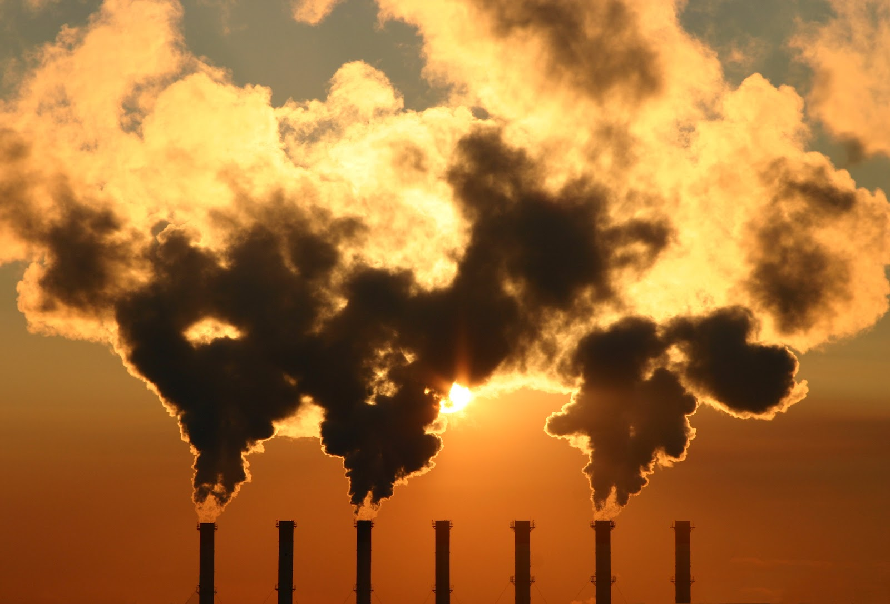

Noticias
Abertas inscrições para comitê de desenvolvimento sustentável
Representantes da sociedade civil e de municípios podem se inscrever, até 22 de março, para participar da Comissão Nacional de Objetivos de Desenvolvimento Sustentável (ODS).
Os editais para a seleção foram publicados no Diário Oficial da União da terça-feira (7). Clique aqui para ler a noticia completa.
Representantes da sociedade civil e de municípios podem se inscrever, até 22 de março, para participar da Comissão Nacional de Objetivos de Desenvolvimento Sustentável (ODS).
Os editais para a seleção foram publicados no Diário Oficial da União da terça-feira (7). Clique aqui para ler a noticia completa.

Sistema de cultivo gera tomate mais saudável e ajuda o meio ambiente
No Rio de Janeiro, um sistema de cultivo, que não é orgânico, traz muitas vantagens em relação ao convencional. Além de gerar um tomate mais saudável, ajuda a preservar o meio ambiente. Clique aqui para ler a noticia completa.
No Rio de Janeiro, um sistema de cultivo, que não é orgânico, traz muitas vantagens em relação ao convencional. Além de gerar um tomate mais saudável, ajuda a preservar o meio ambiente. Clique aqui para ler a noticia completa.

Os jovens que cresceram no 'Vale da Morte' e lutam contra a poluição em Cubatão
Em 1977, a emissão de componentes químicos tóxicos como monóxido de carbono, benzeno, óxidos de enxofre e nitrogênio,
hidrocarbonetos e material particulado (partículas de poluentes suspensas no ar) liberados em Cubatão ultrapassava mil toneladas por dia.
Clique aqui para ler a noticia completa.
Em 1977, a emissão de componentes químicos tóxicos como monóxido de carbono, benzeno, óxidos de enxofre e nitrogênio,
hidrocarbonetos e material particulado (partículas de poluentes suspensas no ar) liberados em Cubatão ultrapassava mil toneladas por dia.
Clique aqui para ler a noticia completa.